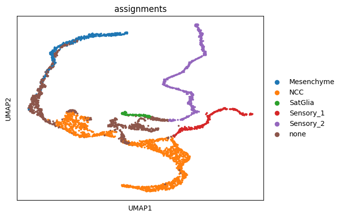
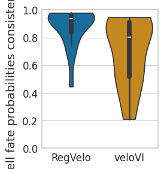
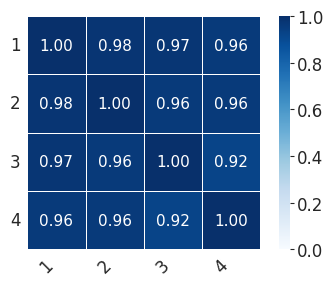
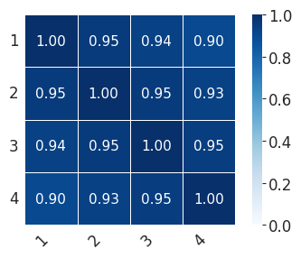
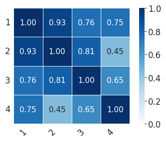

Evaluate consistency of velocity and cell fate probability across scale#
import numpy as np
import pandas as pd
import scipy
import matplotlib.pyplot as plt
import mplscience
import seaborn as sns
import cellrank as cr
import scanpy as sc
import scvi
from rgv_tools import DATA_DIR, FIG_DIR
/home/icb/weixu.wang/miniconda3/envs/regvelo_test/lib/python3.10/site-packages/anndata/utils.py:429: FutureWarning: Importing read_csv from `anndata` is deprecated. Import anndata.io.read_csv instead.
warnings.warn(msg, FutureWarning)
/home/icb/weixu.wang/miniconda3/envs/regvelo_test/lib/python3.10/site-packages/anndata/utils.py:429: FutureWarning: Importing read_excel from `anndata` is deprecated. Import anndata.io.read_excel instead.
warnings.warn(msg, FutureWarning)
/home/icb/weixu.wang/miniconda3/envs/regvelo_test/lib/python3.10/site-packages/anndata/utils.py:429: FutureWarning: Importing read_hdf from `anndata` is deprecated. Import anndata.io.read_hdf instead.
warnings.warn(msg, FutureWarning)
/home/icb/weixu.wang/miniconda3/envs/regvelo_test/lib/python3.10/site-packages/anndata/utils.py:429: FutureWarning: Importing read_loom from `anndata` is deprecated. Import anndata.io.read_loom instead.
warnings.warn(msg, FutureWarning)
/home/icb/weixu.wang/miniconda3/envs/regvelo_test/lib/python3.10/site-packages/anndata/utils.py:429: FutureWarning: Importing read_mtx from `anndata` is deprecated. Import anndata.io.read_mtx instead.
warnings.warn(msg, FutureWarning)
/home/icb/weixu.wang/miniconda3/envs/regvelo_test/lib/python3.10/site-packages/anndata/utils.py:429: FutureWarning: Importing read_text from `anndata` is deprecated. Import anndata.io.read_text instead.
warnings.warn(msg, FutureWarning)
/home/icb/weixu.wang/miniconda3/envs/regvelo_test/lib/python3.10/site-packages/anndata/utils.py:429: FutureWarning: Importing read_umi_tools from `anndata` is deprecated. Import anndata.io.read_umi_tools instead.
warnings.warn(msg, FutureWarning)
General settings#
%matplotlib inline
scvi.settings.seed = 0
[rank: 0] Seed set to 0
Constants#
DATASET = "scale_murine"
SAVE_DATA = True
if SAVE_DATA:
(DATA_DIR / DATASET / "processed").mkdir(parents=True, exist_ok=True)
(DATA_DIR / DATASET / "results").mkdir(parents=True, exist_ok=True)
SAVE_FIGURES = True
if SAVE_FIGURES:
(FIG_DIR).mkdir(parents=True, exist_ok=True)
TERMINAL_STATES = ["Mesenchyme", "Sensory_1", "Sensory_2"]
TERMINAL_STATES_ALL = [
"Melanocytes",
"enFib",
"SC",
"Mesenchyme",
"Sensory_1",
"Sensory_2",
"ChC",
"SatGlia",
"Gut_glia",
"Gut_neuron",
"Symp",
"BCC",
]
TERMINAL_STATES_ALL = (
TERMINAL_STATES_ALL
+ [i + "_1" for i in TERMINAL_STATES_ALL]
+ [i + "_2" for i in TERMINAL_STATES_ALL]
+ [i + "_3" for i in TERMINAL_STATES_ALL]
)
Classify sensory neurons into two#
adata = sc.read_h5ad(DATA_DIR / DATASET / "processed" / "adata_run_stage_2_regvelo_all_regulons.h5ad")
sc.pl.umap(adata, color="assignments")

sensory = adata[adata.obs["assignments"].isin(["Sensory"])].copy()
# sc.pp.neighbors(sensory)
sc.tl.leiden(sensory, resolution=0.1)
sc.tl.umap(sensory)
2025-06-05 10:25:27.134664: E external/local_xla/xla/stream_executor/cuda/cuda_fft.cc:477] Unable to register cuFFT factory: Attempting to register factory for plugin cuFFT when one has already been registered
WARNING: All log messages before absl::InitializeLog() is called are written to STDERR
E0000 00:00:1749111928.917989 544779 cuda_dnn.cc:8310] Unable to register cuDNN factory: Attempting to register factory for plugin cuDNN when one has already been registered
E0000 00:00:1749111929.581052 544779 cuda_blas.cc:1418] Unable to register cuBLAS factory: Attempting to register factory for plugin cuBLAS when one has already been registered
sensory
AnnData object with n_obs × n_vars = 870 × 1122
obs: 'plates', 'devtime', 'location', 'n_genes_by_counts', 'total_counts', 'total_counts_ERCC', 'pct_counts_ERCC', 'doublet_scores', 'leiden', 'CytoTRACE', 'Gut_neuron', 'Sensory', 'Symp', 'enFib', 'ChC', 'Gut_glia', 'NCC', 'Mesenchyme', 'Melanocytes', 'SatGlia', 'SC', 'BCC', 'conflict', 'assignments', 'batch', 'initial_size_unspliced', 'initial_size_spliced', 'initial_size', 'n_counts'
var: 'ERCC', 'n_cells_by_counts', 'mean_counts', 'pct_dropout_by_counts', 'total_counts', 'n_cells', 'm', 'v', 'n_obs', 'res', 'lp', 'lpa', 'qv', 'highly_variable', 'Accession', 'Chromosome', 'End', 'Start', 'Strand', 'TF', 'means', 'dispersions', 'dispersions_norm', 'velocity_genes', 'fit_beta', 'fit_gamma', 'fit_scaling'
uns: '_scvi_manager_uuid', '_scvi_uuid', 'assignments_colors', 'devtime_colors', 'hvg', 'leiden', 'leiden_colors', 'leiden_sizes', 'location_colors', 'log1p', 'neighbors', 'network', 'paga', 'regulators', 'skeleton', 'targets', 'umap'
obsm: 'X_diff', 'X_pca', 'X_umap'
layers: 'GEX', 'Ms', 'Mu', 'ambiguous', 'fit_t', 'latent_time_velovi', 'matrix', 'palantir_imp', 'scaled', 'spanning', 'spliced', 'unspliced', 'velocity'
obsp: 'connectivities', 'distances'
sensory.obs["assignments"] = sensory.obs["assignments"].astype(str)
# Assign "Sensory_1" where leiden == "1"
sensory.obs.loc[sensory.obs["leiden"] == "1", "assignments"] = "Sensory_1"
# Assign "Sensory_2" where leiden is "2" or "0"
sensory.obs.loc[sensory.obs["leiden"].isin(["2", "0"]), "assignments"] = "Sensory_2"
adata.obs["assignments"] = adata.obs["assignments"].astype(str)
adata.obs.loc[sensory.obs_names.tolist(), "assignments"] = sensory.obs["assignments"]
adata.obs.loc[sensory.obs_names.tolist(), "assignments"]
SS2_16_026:A13_unique.bam Sensory_1
SS2_16_026:D20_unique.bam Sensory_1
SS2_16_026:E9_unique.bam Sensory_1
SS2_16_026:G3_unique.bam Sensory_1
SS2_16_026:I24_unique.bam Sensory_1
...
SS2_20_083:P19_unique.bam Sensory_1
SS2_20_083:P17_unique.bam Sensory_1
SS2_20_083:P20_unique.bam Sensory_1
SS2_20_087:B16_unique.bam Sensory_2
SS2_20_087:O2_unique.bam Sensory_2
Name: assignments, Length: 870, dtype: object
adata
AnnData object with n_obs × n_vars = 3926 × 1122
obs: 'plates', 'devtime', 'location', 'n_genes_by_counts', 'total_counts', 'total_counts_ERCC', 'pct_counts_ERCC', 'doublet_scores', 'leiden', 'CytoTRACE', 'Gut_neuron', 'Sensory', 'Symp', 'enFib', 'ChC', 'Gut_glia', 'NCC', 'Mesenchyme', 'Melanocytes', 'SatGlia', 'SC', 'BCC', 'conflict', 'assignments', 'batch', 'initial_size_unspliced', 'initial_size_spliced', 'initial_size', 'n_counts'
var: 'ERCC', 'n_cells_by_counts', 'mean_counts', 'pct_dropout_by_counts', 'total_counts', 'n_cells', 'm', 'v', 'n_obs', 'res', 'lp', 'lpa', 'qv', 'highly_variable', 'Accession', 'Chromosome', 'End', 'Start', 'Strand', 'TF', 'means', 'dispersions', 'dispersions_norm', 'velocity_genes', 'fit_beta', 'fit_gamma', 'fit_scaling'
uns: '_scvi_manager_uuid', '_scvi_uuid', 'assignments_colors', 'devtime_colors', 'hvg', 'leiden', 'leiden_colors', 'leiden_sizes', 'location_colors', 'log1p', 'neighbors', 'network', 'paga', 'regulators', 'skeleton', 'targets', 'umap'
obsm: 'X_diff', 'X_pca', 'X_umap'
layers: 'GEX', 'Ms', 'Mu', 'ambiguous', 'fit_t', 'latent_time_velovi', 'matrix', 'palantir_imp', 'scaled', 'spanning', 'spliced', 'unspliced', 'velocity'
obsp: 'connectivities', 'distances'
Measuring cell fate probabilities across different scale#
fate_probs = []
for scale in [2, 3, 4, 5]:
adata = sc.read_h5ad(DATA_DIR / DATASET / "processed" / f"adata_run_stage_{scale}_regvelo_all_regulons.h5ad")
adata.obs["assignments"] = adata.obs["assignments"].astype(str)
adata.obs.loc[sensory.obs_names.tolist(), "assignments"] = sensory.obs["assignments"]
adata.obs["assignments"] = adata.obs["assignments"].astype("category")
del adata.uns["assignments_colors"]
vk = cr.kernels.VelocityKernel(adata)
vk.compute_transition_matrix()
ck = cr.kernels.ConnectivityKernel(adata).compute_transition_matrix()
kernel = 0.8 * vk + 0.2 * ck
# kernel = vk
## evaluate the fate prob on original space
estimator = cr.estimators.GPCCA(kernel)
n_states = 3
for _nround in range(100):
estimator.compute_macrostates(n_states=n_states, cluster_key="assignments")
if len(set(np.unique(estimator.macrostates.tolist())).intersection(TERMINAL_STATES)) == 3:
estimator.set_terminal_states(
list(set(np.unique(estimator.macrostates.tolist())).intersection(TERMINAL_STATES_ALL))
)
# estimator.plot_macrostates(which="terminal", discrete=True, legend_loc="on data", s=100)
estimator.compute_fate_probabilities(solver="direct")
print(str(n_states) + " works!")
break
n_states += 1
fate_probs.append(
pd.DataFrame(
adata.obsm["lineages_fwd"], columns=adata.obsm["lineages_fwd"].names.tolist(), index=adata.obs_names
)
)
WARNING: Requested more macrostates `4` than available Schur vectors `3`. Recomputing the decomposition
4 works!
[0]PETSC ERROR: ------------------------------------------------------------------------
[0]PETSC ERROR: Caught signal number 13 Broken Pipe: Likely while reading or writing to a socket
[0]PETSC ERROR: Try option -start_in_debugger or -on_error_attach_debugger
[0]PETSC ERROR: or see https://petsc.org/release/faq/#valgrind and https://petsc.org/release/faq/
[0]PETSC ERROR: configure using --with-debugging=yes, recompile, link, and run
[0]PETSC ERROR: to get more information on the crash.
[0]PETSC ERROR:
WARNING: Requested more macrostates `4` than available Schur vectors `3`. Recomputing the decomposition
4 works!
[0]PETSC ERROR: ------------------------------------------------------------------------
[0]PETSC ERROR: Caught signal number 13 Broken Pipe: Likely while reading or writing to a socket
[0]PETSC ERROR: Try option -start_in_debugger or -on_error_attach_debugger
[0]PETSC ERROR: or see https://petsc.org/release/faq/#valgrind and https://petsc.org/release/faq/
[0]PETSC ERROR: configure using --with-debugging=yes, recompile, link, and run
[0]PETSC ERROR: to get more information on the crash.
Abort(59) on node 0 (rank 0 in comm 0): application called MPI_Abort(MPI_COMM_WORLD, 59) - process 0
[0]PETSC ERROR: ------------------------------------------------------------------------
[0]PETSC ERROR: Caught signal number 13 Broken Pipe: Likely while reading or writing to a socket
[0]PETSC ERROR: Try option -start_in_debugger or -on_error_attach_debugger
[0]PETSC ERROR: or see https://petsc.org/release/faq/#valgrind and https://petsc.org/release/faq/
[0]PETSC ERROR: configure using --with-debugging=yes, recompile, link, and run
[0]PETSC ERROR: to get more information on the crash.
Abort(59) on node 0 (rank 0 in comm 0): application called MPI_Abort(MPI_COMM_WORLD, 59) - process 0
WARNING: Requested more macrostates `4` than available Schur vectors `3`. Recomputing the decomposition
WARNING: Requested more macrostates `5` than available Schur vectors `4`. Recomputing the decomposition
WARNING: Requested more macrostates `6` than available Schur vectors `5`. Recomputing the decomposition
WARNING: Requested more macrostates `7` than available Schur vectors `6`. Recomputing the decomposition
7 works!
[0]PETSC ERROR: ------------------------------------------------------------------------
[0]PETSC ERROR: Caught signal number 13 Broken Pipe: Likely while reading or writing to a socket
[0]PETSC ERROR: Try option -start_in_debugger or -on_error_attach_debugger
[0]PETSC ERROR: or see https://petsc.org/release/faq/#valgrind and https://petsc.org/release/faq/
[0]PETSC ERROR: configure using --with-debugging=yes, recompile, link, and run
[0]PETSC ERROR: to get more information on the crash.
Abort(59) on node 0 (rank 0 in comm 0): application called MPI_Abort(MPI_COMM_WORLD, 59) - process 0
[0]PETSC ERROR: ------------------------------------------------------------------------
[0]PETSC ERROR: Caught signal number 13 Broken Pipe: Likely while reading or writing to a socket
[0]PETSC ERROR: Try option -start_in_debugger or -on_error_attach_debugger
[0]PETSC ERROR: or see https://petsc.org/release/faq/#valgrind and https://petsc.org/release/faq/
[0]PETSC ERROR: configure using --with-debugging=yes, recompile, link, and run
[0]PETSC ERROR: to get more information on the crash.
Abort(59) on node 0 (rank 0 in comm 0): application called MPI_Abort(MPI_COMM_WORLD, 59) - process 0
WARNING: Requested more macrostates `4` than available Schur vectors `3`. Recomputing the decomposition
WARNING: Requested more macrostates `5` than available Schur vectors `4`. Recomputing the decomposition
WARNING: Requested more macrostates `6` than available Schur vectors `5`. Recomputing the decomposition
WARNING: Requested more macrostates `7` than available Schur vectors `6`. Recomputing the decomposition
WARNING: Requested more macrostates `8` than available Schur vectors `7`. Recomputing the decomposition
8 works!
fate_probs2 = []
for scale in [2, 3, 4, 5]:
adata = sc.read_h5ad(DATA_DIR / DATASET / "processed" / f"adata_run_stage_{scale}_velovi_all_regulons.h5ad")
adata.obs["assignments"] = adata.obs["assignments"].astype(str)
adata.obs.loc[sensory.obs_names.tolist(), "assignments"] = sensory.obs["assignments"]
adata.obs["assignments"] = adata.obs["assignments"].astype("category")
del adata.uns["assignments_colors"]
vk = cr.kernels.VelocityKernel(adata)
vk.compute_transition_matrix()
ck = cr.kernels.ConnectivityKernel(adata).compute_transition_matrix()
kernel = 0.8 * vk + 0.2 * ck
# kernel = vk
## evaluate the fate prob on original space
estimator = cr.estimators.GPCCA(kernel)
n_states = 3
for _nround in range(100):
estimator.compute_macrostates(n_states=n_states, cluster_key="assignments")
if len(set(np.unique(estimator.macrostates.tolist())).intersection(TERMINAL_STATES)) == 3:
estimator.set_terminal_states(
list(set(np.unique(estimator.macrostates.tolist())).intersection(TERMINAL_STATES_ALL))
)
# estimator.plot_macrostates(which="terminal", discrete=True, legend_loc="on data", s=100)
estimator.compute_fate_probabilities(solver="direct")
print(str(n_states) + " works!")
break
n_states += 1
fate_probs2.append(
pd.DataFrame(
adata.obsm["lineages_fwd"], columns=adata.obsm["lineages_fwd"].names.tolist(), index=adata.obs_names
)
)
[0]PETSC ERROR: ------------------------------------------------------------------------
[0]PETSC ERROR: Caught signal number 13 Broken Pipe: Likely while reading or writing to a socket
[0]PETSC ERROR: Try option -start_in_debugger or -on_error_attach_debugger
[0]PETSC ERROR: or see https://petsc.org/release/faq/#valgrind and https://petsc.org/release/faq/
[0]PETSC ERROR: configure using --with-debugging=yes, recompile, link, and run
[0]PETSC ERROR: to get more information on the crash.
Abort(59) on node 0 (rank 0 in comm 0): application called MPI_Abort(MPI_COMM_WORLD, 59) - process 0
[0]PETSC ERROR: ------------------------------------------------------------------------
[0]PETSC ERROR: Caught signal number 13 Broken Pipe: Likely while reading or writing to a socket
[0]PETSC ERROR: Try option -start_in_debugger or -on_error_attach_debugger
[0]PETSC ERROR: or see https://petsc.org/release/faq/#valgrind and https://petsc.org/release/faq/
[0]PETSC ERROR: configure using --with-debugging=yes, recompile, link, and run
[0]PETSC ERROR: to get more information on the crash.
Abort(59) on node 0 (rank 0 in comm 0): application called MPI_Abort(MPI_COMM_WORLD, 59) - process 0
3 works!
[0]PETSC ERROR: ------------------------------------------------------------------------
[0]PETSC ERROR: Caught signal number 13 Broken Pipe: Likely while reading or writing to a socket
[0]PETSC ERROR: Try option -start_in_debugger or -on_error_attach_debugger
[0]PETSC ERROR: or see https://petsc.org/release/faq/#valgrind and https://petsc.org/release/faq/
[0]PETSC ERROR: configure using --with-debugging=yes, recompile, link, and run
[0]PETSC ERROR: to get more information on the crash.
Abort(59) on node 0 (rank 0 in comm 0): application called MPI_Abort(MPI_COMM_WORLD, 59) - process 0
[0]PETSC ERROR: ------------------------------------------------------------------------
[0]PETSC ERROR: Caught signal number 13 Broken Pipe: Likely while reading or writing to a socket
[0]PETSC ERROR: Try option -start_in_debugger or -on_error_attach_debugger
[0]PETSC ERROR: or see https://petsc.org/release/faq/#valgrind and https://petsc.org/release/faq/
[0]PETSC ERROR: configure using --with-debugging=yes, recompile, link, and run
[0]PETSC ERROR: to get more information on the crash.
Abort(59) on node 0 (rank 0 in comm 0): application called MPI_Abort(MPI_COMM_WORLD, 59) - process 0
WARNING: Requested more macrostates `4` than available Schur vectors `3`. Recomputing the decomposition
4 works!
[0]PETSC ERROR: ------------------------------------------------------------------------
[0]PETSC ERROR: Caught signal number 13 Broken Pipe: Likely while reading or writing to a socket
[0]PETSC ERROR: Try option -start_in_debugger or -on_error_attach_debugger
[0]PETSC ERROR: or see https://petsc.org/release/faq/#valgrind and https://petsc.org/release/faq/
[0]PETSC ERROR: configure using --with-debugging=yes, recompile, link, and run
[0]PETSC ERROR: to get more information on the crash.
Abort(59) on node 0 (rank 0 in comm 0): application called MPI_Abort(MPI_COMM_WORLD, 59) - process 0
[0]PETSC ERROR: ------------------------------------------------------------------------
[0]PETSC ERROR: Caught signal number 13 Broken Pipe: Likely while reading or writing to a socket
[0]PETSC ERROR: Try option -start_in_debugger or -on_error_attach_debugger
[0]PETSC ERROR: or see https://petsc.org/release/faq/#valgrind and https://petsc.org/release/faq/
[0]PETSC ERROR: configure using --with-debugging=yes, recompile, link, and run
[0]PETSC ERROR: to get more information on the crash.
Abort(59) on node 0 (rank 0 in comm 0): application called MPI_Abort(MPI_COMM_WORLD, 59) - process 0
WARNING: Requested more macrostates `4` than available Schur vectors `3`. Recomputing the decomposition
WARNING: Requested more macrostates `5` than available Schur vectors `4`. Recomputing the decomposition
5 works!
[0]PETSC ERROR: ------------------------------------------------------------------------
[0]PETSC ERROR: Caught signal number 13 Broken Pipe: Likely while reading or writing to a socket
[0]PETSC ERROR: Try option -start_in_debugger or -on_error_attach_debugger
[0]PETSC ERROR: or see https://petsc.org/release/faq/#valgrind and https://petsc.org/release/faq/
[0]PETSC ERROR: configure using --with-debugging=yes, recompile, link, and run
[0]PETSC ERROR: to get more information on the crash.
Abort(59) on node 0 (rank 0 in comm 0): application called MPI_Abort(MPI_COMM_WORLD, 59) - process 0
[0]PETSC ERROR: ------------------------------------------------------------------------
[0]PETSC ERROR: Caught signal number 13 Broken Pipe: Likely while reading or writing to a socket
[0]PETSC ERROR: Try option -start_in_debugger or -on_error_attach_debugger
[0]PETSC ERROR: or see https://petsc.org/release/faq/#valgrind and https://petsc.org/release/faq/
[0]PETSC ERROR: configure using --with-debugging=yes, recompile, link, and run
[0]PETSC ERROR: to get more information on the crash.
Abort(59) on node 0 (rank 0 in comm 0): application called MPI_Abort(MPI_COMM_WORLD, 59) - process 0
WARNING: Requested more macrostates `4` than available Schur vectors `3`. Recomputing the decomposition
WARNING: Requested more macrostates `5` than available Schur vectors `4`. Recomputing the decomposition
WARNING: Requested more macrostates `6` than available Schur vectors `5`. Recomputing the decomposition
WARNING: Requested more macrostates `7` than available Schur vectors `6`. Recomputing the decomposition
WARNING: Requested more macrostates `8` than available Schur vectors `7`. Recomputing the decomposition
WARNING: Unable to compute macrostates with `n_states=8` because it will split complex conjugate eigenvalues. Using `n_states=9`
WARNING: Requested more macrostates `10` than available Schur vectors `9`. Recomputing the decomposition
WARNING: Requested more macrostates `11` than available Schur vectors `10`. Recomputing the decomposition
WARNING: Requested more macrostates `12` than available Schur vectors `11`. Recomputing the decomposition
WARNING: Requested more macrostates `13` than available Schur vectors `12`. Recomputing the decomposition
13 works!
Calculate consistency#
cf_consis_rgv = []
for ct in ["Mesenchyme", "Sensory_1", "Sensory_2"]:
scale_consis = pd.DataFrame(0, index=[1, 2, 3, 4], columns=[1, 2, 3, 4])
for i in [1, 2, 3, 4]:
for j in [1, 2, 3, 4]:
cells = list(set(fate_probs[i - 1].index.tolist()).intersection(fate_probs[j - 1].index.tolist()))
scale_consis.loc[i, j] = scipy.stats.spearmanr(
fate_probs[i - 1].loc[cells, ct], fate_probs[j - 1].loc[cells, ct]
)[0]
rows, cols = np.triu_indices(scale_consis.shape[0], k=1)
cf_consis_rgv += np.array(scale_consis)[rows, cols].tolist()
print(
"median:"
+ str(np.median(np.array(scale_consis)[rows, cols].tolist()))
+ ",min:"
+ str(np.min(np.array(scale_consis)[rows, cols].tolist()))
)
print("std:" + str(np.std(np.array(scale_consis)[rows, cols])))
median:0.9587626326031318,min:0.9237944519910019
std:0.017313863610011665
median:0.9423752445004702,min:0.9025188425306376
std:0.017753507783219654
median:0.7518128707168175,min:0.4461460712143073
std:0.1486721319556072
cf_consis_vi = []
for ct in ["Mesenchyme", "Sensory_1", "Sensory_2"]:
scale_consis = pd.DataFrame(0, index=[1, 2, 3, 4], columns=[1, 2, 3, 4])
for i in [1, 2, 3, 4]:
for j in [1, 2, 3, 4]:
cells = list(set(fate_probs2[i - 1].index.tolist()).intersection(fate_probs2[j - 1].index.tolist()))
scale_consis.loc[i, j] = scipy.stats.spearmanr(
fate_probs2[i - 1].loc[cells, ct], fate_probs2[j - 1].loc[cells, ct]
)[0]
rows, cols = np.triu_indices(scale_consis.shape[0], k=1)
cf_consis_vi += np.array(scale_consis)[rows, cols].tolist()
print(
"median:"
+ str(np.median(np.array(scale_consis)[rows, cols].tolist()))
+ ",min:"
+ str(np.min(np.array(scale_consis)[rows, cols].tolist()))
)
print("std:" + str(np.std(np.array(scale_consis)[rows, cols])))
median:0.9322850238724748,min:0.8752014445041821
std:0.02891772631009028
median:0.7102842336404476,min:0.4394749104303848
std:0.18157652487012077
median:0.5431073780128315,min:0.21151749377227083
std:0.20012365528402898
scipy.stats.ttest_ind(
cf_consis_rgv,
cf_consis_vi,
equal_var=False,
alternative="greater",
)
Ttest_indResult(statistic=2.6773361099672224, pvalue=0.006186431179324948)
np.mean(cf_consis_rgv)
0.8732589490297931
np.std(cf_consis_rgv)
0.13747980004181917
np.mean(cf_consis_vi)
0.6969089385825229
np.std(cf_consis_vi)
0.2342109163876494
dfs = []
g_df = pd.DataFrame({"Cell fate probabilities consistency": cf_consis_rgv})
g_df["Method"] = "RegVelo"
dfs.append(g_df)
g_df = pd.DataFrame({"Cell fate probabilities consistency": cf_consis_vi})
g_df["Method"] = "veloVI"
dfs.append(g_df)
df = pd.concat(dfs, axis=0)
df["Method"] = df["Method"].astype("category")
with mplscience.style_context():
sns.set_style(style="whitegrid")
fig, ax = plt.subplots(figsize=(2.5, 3))
pal = {"RegVelo": "#0173b2", "veloVI": "#de8f05"}
sns.violinplot(
data=df,
ax=ax,
# orient="h",
x="Method",
y="Cell fate probabilities consistency",
order=["RegVelo", "veloVI"],
cut=0,
palette=pal,
)
# plt.legend(title='', loc='lower center', bbox_to_anchor=(0.5, -0.6), ncol=3)
# ax.set_yticks([0.7, 0.8, 0.9,1.0])
# ax.set_yticklabels([0.7, 0.8, 0.9,1.0])
plt.xlabel("")
ax.set_ylim(0, 1)
if SAVE_FIGURES:
fig.savefig(FIG_DIR / DATASET / "consist_robustness.svg", format="svg", transparent=True, bbox_inches="tight")
plt.show()

Plot heatmap#
for ct in ["Mesenchyme", "Sensory_1", "Sensory_2"]:
scale_consis = pd.DataFrame(0, index=[1, 2, 3, 4], columns=[1, 2, 3, 4])
for i in [1, 2, 3, 4]:
for j in [1, 2, 3, 4]:
cells = list(set(fate_probs[i - 1].index.tolist()).intersection(fate_probs[j - 1].index.tolist()))
scale_consis.loc[i, j] = scipy.stats.spearmanr(
fate_probs[i - 1].loc[cells, ct], fate_probs[j - 1].loc[cells, ct]
)[0]
with mplscience.style_context():
sns.set_style(style="whitegrid")
fig, ax = plt.subplots(figsize=(4, 3))
sns.heatmap(
scale_consis,
annot=True,
fmt=".2f",
linewidths=0.5,
square=True,
cbar=True,
cmap="Blues",
vmin=0,
vmax=1,
ax=ax,
)
plt.xticks(rotation=45, ha="right")
plt.yticks(rotation=0)
plt.tight_layout()
if SAVE_FIGURES:
plt.savefig(FIG_DIR / f"heatmap_{ct}_final.svg", format="svg", transparent=True, bbox_inches="tight")
plt.show()


